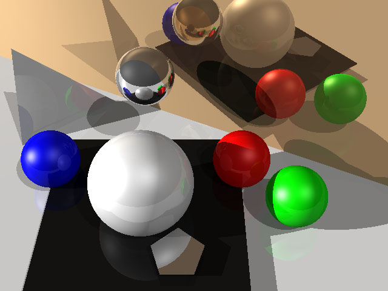
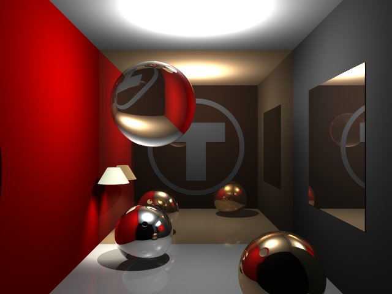

LtRay 开发备忘录
文章目录
数学工具
工欲善其事，必先利其器！作为一个光线跟踪器，数学工具自然是少不了的。需要用到哪些数学工具呢？作为3D程序，点肯定是需要的，另外做变换也是少不了的，所以最基本的数学工具就是Vector、Point、Matrix。
有一个问题值得思考：点也可以当做特殊的向量，应不应该将它们合并到一起，然后用typedef的方式取别名呢？这个看上去不错，能够复用很多代码，但是仔细想想，向量可以相加，点相加成了什么？类似的还有点积、叉积，为何防止这种谬误发生，还是分别实现的好！
首先考虑点Point类，作为一个齐次坐标系的点，应该具有4个量：x、y、z、w，并且这四个量是可以独立变化的，那就直接设置成一个struct好了。然后就是一些操作符和辅助函数，比如取反，那就是x、y、z分别取反，还有相减，点相减的话就不再是点了，而是向量。值得注意的是，齐次坐标系的点因为有w分量，所以相减的时候应该将其先归一化，也就是x、y、z分量分别除以w。
然后就是Vector类，向量则复杂的多！不过向量有一点方便的地方就是w总是1，所以不需要考虑归一化的问题，直接把w设成常量好了。操作符的话有+、-、*、/，都是对应位置的操作，比较简单。向量的辅助函数比较多，比如点积Dot、叉积Cross、长度Length、归一化函数Normal，对于这些辅助函数，应该作为类成员还是类外函数呢？我个人的倾向是放在类外，以减少耦合度。
最后就是Matrix类，因为光线跟踪器需要考虑的变换都是在齐次坐标系内的，所以变换矩阵大小都是4x4，其内部成员变量也就固定了16的大小。我用的是float data[16]这样的数组来表示的，这样的好处就是可以使用C++11的initializer list来初始化。关于Matrix可以预先定义很多矩阵，比如单位矩阵IdentityMatrix，对角矩阵DiagMatrix、旋转、平移、伸缩矩阵等等，比如平移矩阵的函数可以这么定义：
Matrix ltray::TranslationMatrix(Vector t)
{
return{ {
1, 0, 0, t.x,
0, 1, 0, t.y,
0, 0, 1, t.z,
0, 0, 0, 1 } };
}
可以看到使用initializer list来表示矩阵是非常直观的。另外就是矩阵的操作符，矩阵可以和点、向量、矩阵相乘，而且三种相乘方式都不相同。本来矩阵和点与向量相乘应该可以统一的，但是向量由于w分量设置成了常数1，所以最好还是分开实现了。
实现好了这几个类，然后就是进行测试了，我用的是gtest。关于测试用例的多少以及覆盖率问题，为了兼顾效率，我选择了一次性测试多个函数的方法，比如测试点积Dot，我就同时把操作符+、-、=测试了，比如EXPECT_EQ(c,Dot(a+b,a-b))。因为从概率上来说，如果一个函数出错了，那还能通过测试的概率太小了，使用这种方式能够避免繁琐的测试用例。
几何工具
其实这里要实现的几何工具也可以说是数学工具，只不过因为用得没有那么广泛，所以为了区分一下，就叫几何工具好了。要实现的几何工具有哪些呢？首先，视野是应该有一个范围的，所以需要定义一个Range类。然后要进行光线跟踪的话，肯定要从摄像机发射射线，射线具有原点和方向，所以应该单独做一个Ray的类。用射线和物体表面求交的时候，应该首先和包围盒进行求交测试，所以应该有一个Box类。最后每个物体和射线求交的时候，应该知道怎么把光线变到自己的局部坐标系来，并且操作完之后还得把光线变回去，而变回去如果对矩阵求逆的话代价太大，所以需要一个Transform的类来同时管理正向变换和逆向变换。
对于Range类，考虑其成员，应该有一个上界和下界，为了简单明了易懂，就设置成min、max吧。Range需要的操作符和辅助函数不多，操作符的话，需要判断是否相等，辅助函数的话，需要判断是否为空IsNull以及其长度Length。值得注意的是，Range是可能为空的，空的Range其中一个成员为NAN，在判断两个Range相等以及求长度的时候应该考虑这种情况。另外，Range应该默认初始化为空，还有就是如果min>max的话，也为空。
对于Ray类，需要有三个成员：Point origin、Vector direction、Range range，分别表示射线原点、射线方向以及射线的范围。这里的射线范围是为了光线跟踪的方便而设置的。不过考虑到实际情况，射线的范围默认初始化应该为[0，inf)。Ray已经几乎简单到不需要辅助函数，不过为了方便测试，还是重载一下==操作符吧。
对于Box类，表示一个方盒需要两个点，一个靠近原点的点pmin, 一个远离原点的点pmax。Box本身不保证pmin一定会比pmax更靠近原点，这些点的行为应该由辅助函数和具体的应用来确定。Box的辅助函数应该要有判断相等的操作符==，判断一个点是否在Box内的函数Inside，与射线相交的函数Intersect，以及两个Box合并成一个大Box的函数Union。这里的Union并不是直接把两个Box所占的空间合并起来，而是去他们合并之后的最小点和最大点，构成一个新的Box。
对于Transform类，这个就有点特殊了，首先两个矩阵成员mat和inv_mat，他们之间具有较强的关联性，应该时刻保证mat^-1 = inv_mat，不能运行外界对其随意写入，所以应当将其封装起来，只提供一些操作的接口。这些操作函数包括平移、旋转、缩放，因为需要对Transform的mat和inv_mat进行直接的读写访问，所以应该将其设置为成员变量。这些操作的函数里面，应该同时维护mat和inv_mat，每对mat做一次操作，就应该对inv_mat做相反的操作。
还有一件事情需要做的是，Transform与各个类直接的应用关系，比如Transform可以应用到点、向量、射线上面，并且对于法线的变换方式又不同，所以应该重载变换应用和变换逆向过程的函数，使之能够对各个类进行变换。应用变换直接左乘矩阵就可以，但是有两个特例，一个是法向量，其变换需要左乘矩阵的逆的转置，还有一个就是Box，变换过程并不能直接用两个点左乘矩阵，而是应该求出Box变换后的最大范围，从而生成新的矩阵。
相机
前面两小节已经准备好了必要的数学和几何工具，现在可以着手实现光线跟踪的框架了。
要想用光线跟踪的方法渲染出一个场景，有这些必要的因素：相机、跟踪器、场景。这一节介绍相机的实现。
成像原理
光线跟踪与往常的实时渲染不同，实时渲染是通过顶点变换、投影变换以及光栅化的方法来渲染出图像的，而光线跟踪是从相机出发，发射射线与场景中的物体求交，得到相机平面每个像素的颜色，从而渲染出整幅画面。
相机姿态
首先考虑相机的属性，在空间中的位置应该用一个Point来表示，而相机的姿态应该用三个向量u、v、w构成的坐标系来表示。为什么要用一个坐标系来表示相机的几何状态？首先相机是有底片的，也就是映射到我们屏幕上的画面，相机用u、v、w确定后，底片上某一点的坐标就可以用u、v以及焦距f确定，确定好底片的坐标才好做视口的映射以及射线的生成。
需要注意的是，w是与相机朝向的方向相反的，为什么要这样呢？因为我们习惯于用u表示图像的横轴，v表示图像的纵轴，而这里整个程序我用的是右手坐标系，所以w只好与相机方向相反了，也就是w轴是从屏幕往外的。
视口
然后就是相机的视口，包括视口的大小、位置、离相机中心的位置（也就是焦距）以及视口上的像素个数。视口的大小和焦距影响了视野的宽度，不过由于这里暂时不考虑光圈，所以不需要考虑焦距对景深的影响。另外相机还经常用fov（field of view）来表示视野宽度，所以相机应该提供两个初始化视口的方法，一种直接指定viewport，一种提供fov来计算。
UVW坐标
然而通过u、v、w来设置相机的姿态未免有点太麻烦了，比较直观的做法是，给定相机朝向的点lookat，以及相机上方的方向up，通过这两个量来计算u、v、w。首先，我们知道相机位置和lookat 的点，就能直接得出w，然后用up和w做叉积得出相机侧面方向的向量u，最后，再用w和u做叉积，得出相机准确的向上方向v。
有个时候，我们需要用到从世界坐标系变换到相机坐标的矩阵，这个矩阵可以通过相机的position和uvw计算出来，详细计算方法可以参考源代码，这里就不在赘述了。
射线生成
最后就是怎么样生成射线了！生成射线的方法有很多种，这些射线的不同生成方法也就决定了投影的方式。拿最常用的透视（perspective）投影举例，首先确定好成像平面，一般来说，成像平面与相机的u-v平面是平行的，并且与相机原点的距离就是焦距。但是与现实中的相机不同的是，成像平面往往设置在前方，这样才不会出现倒立的像。确定好了成像平面内后，从相机原点出发，选定成像平面上的一点，组成一根射线。对于成像平面上的每一个点，都发出一条射线，这些射线通过后续的跟踪器进行跟踪，从而就能确定好成像平面上的每个点了。
2017年3月7日
LtRay经过前面8次迭代，从最初的v0.1.0到现在最新的v0.1.7，功能和稳定性上面已经有了很大的改进。
其中v0.1.0的渲染效果如下：

略显生硬，不过还好，毕竟v.0.1.0版本的开发只用了几天时间。
到了v0.1.7，已经有了很大的改善：

早些天把两个重要的feature实现了，一个是纹理，另一个是区域光。其实实现这两个并不难，只不过因为架构上面的不足牵一发而动全身，所以这两个feature迟迟没支持。现在实现了也还只是一个demo，要整合到主体上面还有许多工作要做。以下是最新的实验性纹理和区域光渲染结果：
所以接下来的开发计划就是把这两个重要的feature整合到主体，再发布成v0.2。
整合过程中需要做的有：
1. 支持更多surface的纹理
2. 支持更多surface的采样
3. 独立的surface采样器
4. 分离core，提供API
2017年3月8日
要想在一个错综复杂的系统中添加一个功能还真不是一件简单的事情，思考了很久还是没有好的办法能够既保持好主体不变，又添加新的功能。从一开始，这个架构设计方面就有欠缺，因为这个程序是一点一滴慢慢累积的，期间并没有做过耦合性和模块化的重构，所以导致了现在开发的艰难。看样子还是得重新制定一下架构。
另外，发现一本光线跟踪的书很不错：《Realistic Ray Tracing》，作者是Peter Shirley，也就是《Fundamentals of Computer Graphics》的作者。FCG这本书我觉得非常赞叹，RRT刚开始看，不过也感觉比PBRT那本好多了。LtRay的0.2版本还是重新开发吧，多借鉴借鉴RRT的思路。
2017年3月13日
这几天终于把《Realistic Ray Tracing》看完了，书的理论部分写得很好，很多方法真是让人眼界大开。不过有两个地方值得吐槽的，一是作者的编程功底还有待提高，书上给的代码完全是demo级别的；二是采样和辐射度学这两章竟然直接copy的《Fundamentals of Computer Graphics》里面的，虽然是同一个作者，但是这样不太好吧。
新的版本还是决定重新开始，尤其要注意的地方是应该着重实现重要的功能，逐步完善次要的功能。
重要的功能有：
- 数学工具
- 相机
- 形状
- 跟踪器
- 纹理映射
- 采样器
- 材质
次要的功能有：
- 更多相机，比如正交相机、鱼眼镜头等
- shader
- 更多形状
- buffer和mesh
- transform
- 更多跟踪算法
- 更多IO接口
- 封装成lib
未完待续……
文章作者 Lianera
上次更新 2017年03月07日